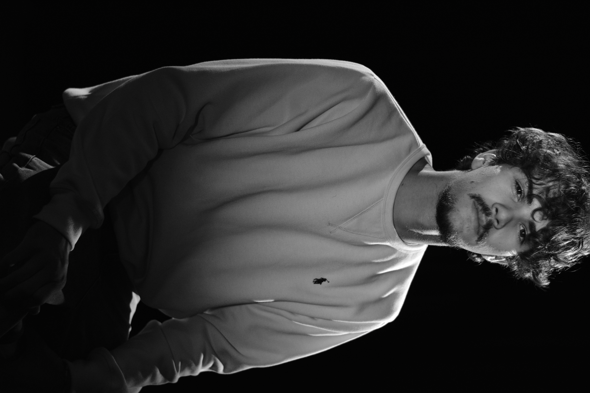
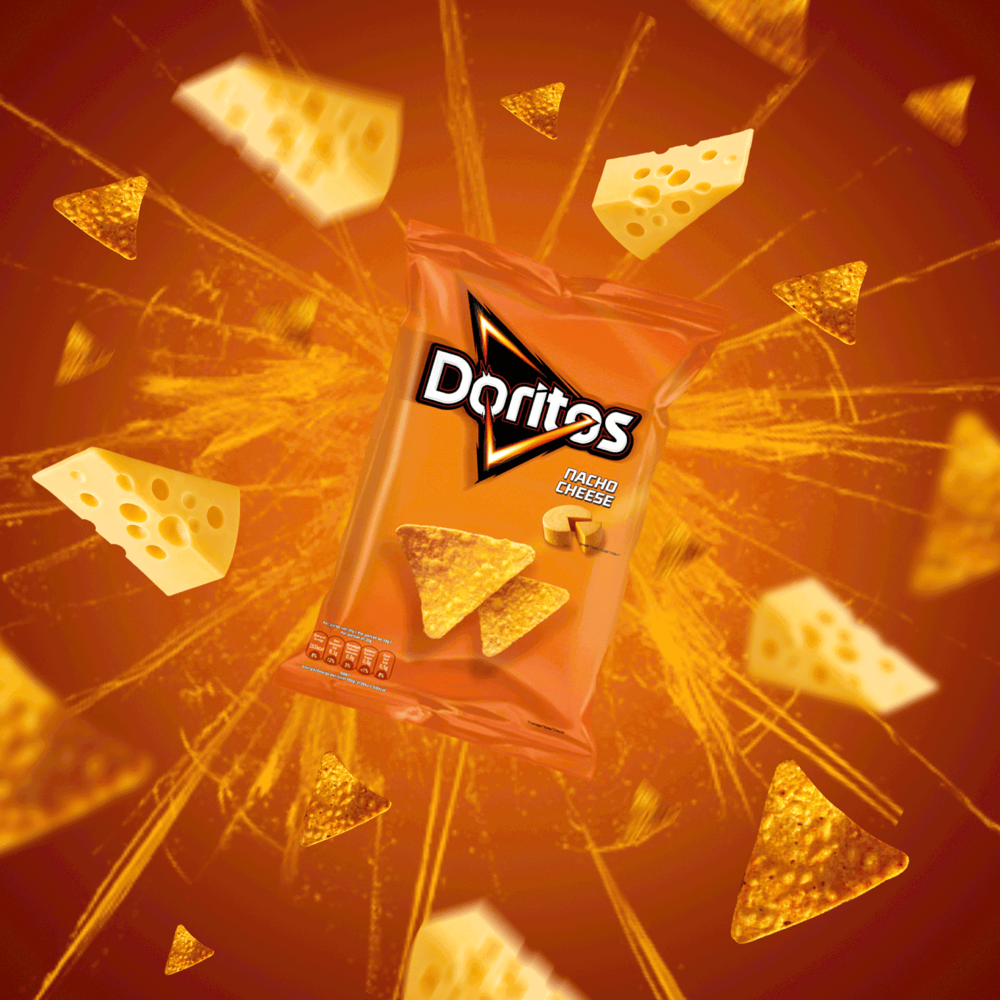
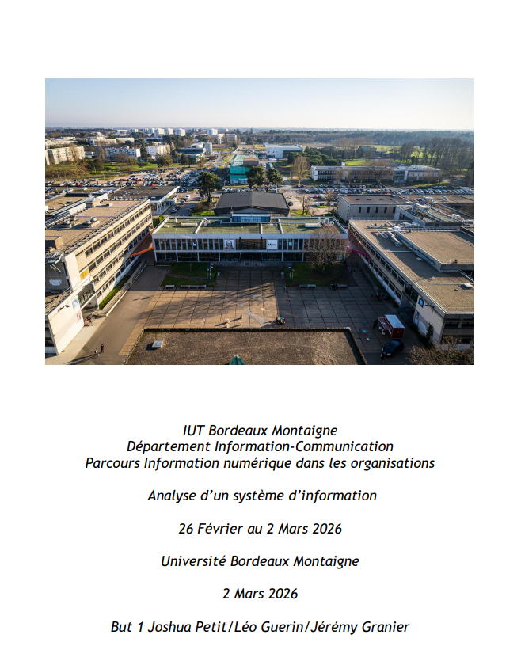
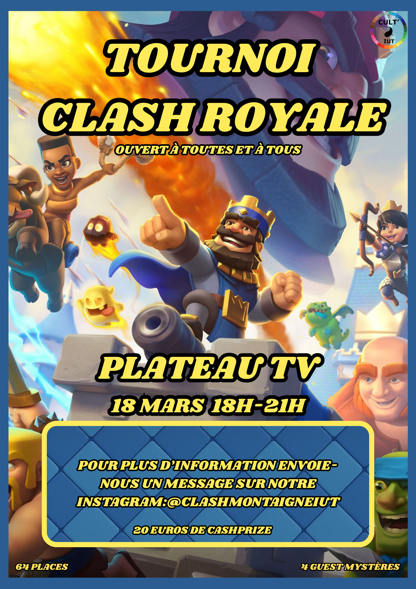
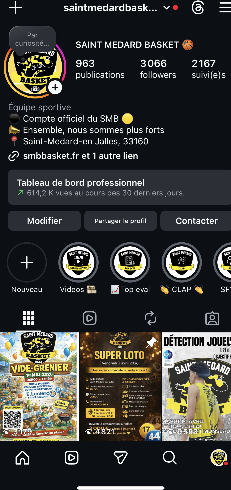

IUT BORDEAUX MONTAIGNE
Je m’appelle Joshua Petit, j’ai 20 ans. Après une année en science politique au sein de l’Université de Lille, j’ai décidé de me réorienter vers un domaine plus en lien avec mes centres d’intérêt et mon projet professionnel.
Je suis actuellement étudiant en BUT Information-Communication, parcours Information Numérique dans les Organisations, à l’IUT Bordeaux Montaigne.
En parallèle de mes études, je suis Community Manager bénévole au sein d’un club de basket. Je gère les réseaux sociaux du club en créant des contenus (publications, visuels, annonces de matchs, résultats) et en mettant en avant la vie du club. Cette expérience me permet de développer ma créativité, mon sens de l’organisation et ma capacité à adapter ma communication en fonction des publics.
Mon projet professionnel est de devenir Community Manager dans un club sportif professionnel. Je pratique le basket en compétition depuis 14 ans, ce qui m’a permis de développer une vraie connaissance de cet univers, en plus de ma passion pour le sport.
Sérieux, motivé et impliqué, je souhaite continuer à progresser pour développer mes compétences et me rapprocher de mon objectif professionnel.

Dans le cadre de ce projet, nous avons conçu et réalisé une publicité de 30 secondes pour Doritos, en nous inspirant des standards des campagnes diffusées lors du Super Bowl. L’objectif était de produire un contenu à la fois impactant, narratif et divertissant, en respectant des contraintes de format et de temps.
Le concept repose sur une situation simple qui évolue vers un scénario original : trois amis partagent un paquet de Doritos jusqu’à ce qu’il ne reste plus qu’une seule chips, déclenchant un conflit. Cette situation bascule dans une mise en scène décalée avec la personnification de la chips, qui devient le centre d’une course-poursuite urbaine, jusqu’à une chute inattendue.
Le projet s’est structuré en plusieurs phases. Une première étape de réflexion collective a permis de définir l’axe créatif, le ton humoristique, ainsi que la narration. Nous avons ensuite sélectionné les lieux de tournage en fonction des contraintes logistiques et visuelles. Le tournage s’est déroulé sur deux jours, avec une répartition clara des rôles (réalisation, cadrage, jeu d’acteur).
La post-production a constitué une phase déterminante, incluant le dérushage, le montage, l’ajout d’effets visuels et le travail sur le rythme narrative. Cette étape a nécessité l’apprentissage autonome d’outils de montage ainsi qu’une attention particulière à la cohérence visuelle et sonore.

Dans le cadre de ma formation en BUT Information-Communication (parcours Information Numérique dans les Organisations) à l’IUT Bordeaux Montaigne, j’ai participé à un projet d’analyse du système d’information de l’Université Bordeaux Montaigne.
L’objectif de ce projet était d’évaluer la visibilité, la lisibilité et l’accessibilité des services numériques proposés aux étudiants, en identifiant les éventuelles limites et en proposant des axes d’amélioration concrets.
Nous avons mené une analyse approfondie du site institutionnel, en étudiant son ergonomie, sa structure, ainsi que l’expérience utilisateur. Ce travail a été complété par un benchmark comparatif avec d’autres universités françaises, notamment celles de Montpellier et de Limoges, afin d’identifier les bonnes pratiques en matière de navigation et d’accès à l’information.
En parallèle, nous avons réalisé une enquête auprès d’étudiants afin d’identifier leurs besoins informationnels. L’analyse des résultats a mis en évidence plusieurs problématiques majeures : un manque de lisibilité des services, une difficulté d’accès à l’information, ainsi qu’une communication jugée insuffisante. Ces constats ont été structurés à l’aide de la méthode MOSCOW afin de prioriser les besoins.

Dans le cadre de ma formation à l’IUT, j’ai participé à la conception et à l’organisation d’un tournoi autour du jeu Clash Royale. L’objectif de ce projet était de créer un événement structuré et engageant, tout en mobilisant des compétences en gestion de projet, communication et organisation.
Le projet a débuté par une phase de réflexion collective visant à définir le format du tournoi (règles, système d’élimination, déroulement des matchs) ainsi que les modalités de participation. Nous avons ensuite travaillé sur la planification globale de l’événement, en prenant en compte les contraintes de temps, de logistique et de coordination entre les participants.
Une attention particulière a été portée à la communication autour du tournoi afin d’assurer une participation suffisante. Nous avons également mis en place des outils de suivi pour organiser les matchs, gérer les résultats et garantir le bon déroulement de la compétition.

Dans le cadre de mon engagement associatif, je participe activement à la stratégie de communication digitale du club en tant que Community Manager bénévole. Mon objectif est de mettre en valeur l’image du club et de renforcer sa visibilité en ligne à travers des contenus réguliers et attractifs.
Je m’occupe de la gestion des réseaux sociaux, de la création à la diffusion des publications : annonces de matchs, résultats, événements, mais aussi moments de la vie quotidienne du club. J’adapte les formats et les messages selon les plateformes et les publics, afin de susciter l’engagement de la communauté et d’attirer de nouveaux abonnés.
Cette mission m’a permis d’acquérir une vision concrète de la communication digitale : je planifie les contenus en suivant une ligne éditoriale claire, j’analyse les retours et les performances des publications pour améliorer continuellement la stratégie, et je veille à entretenir une interaction active avec les abonnés. L’objectif est de créer un lien authentique avec la communauté et de renforcer l’attachement des supporters au club.
Au-delà des aspects techniques, cette expérience m’a appris à être organisé, réactif et créatif, tout en développant ma capacité à travailler sur des projets concrets avec un impact réel sur la visibilité et l’image d’une structure.